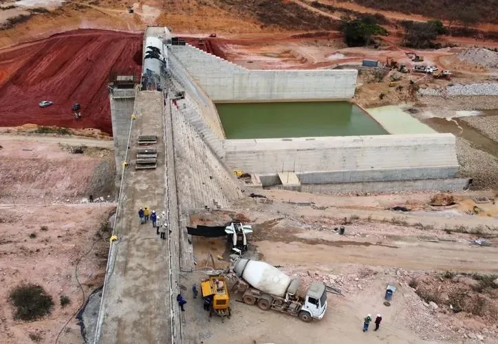
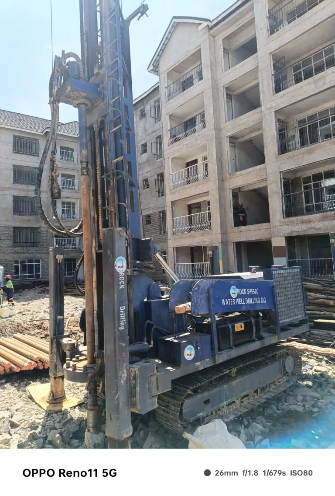
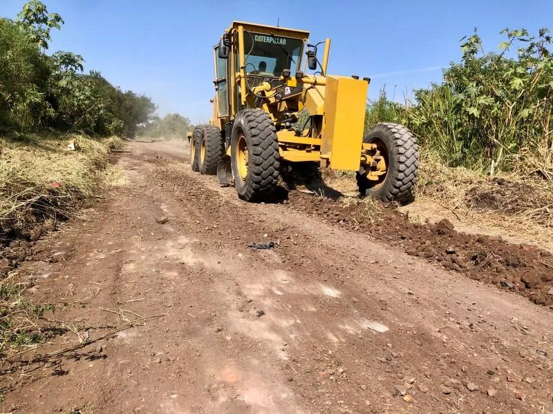

01 / GENERAL CONSTRUCTION
Buildings & Facilities
Construction of residential, commercial, educational, industrial and public-service facilities.
Six core service areas currently described by Borabu Builders, presented with a clearer construction and infrastructure focus.
Construction of residential, commercial, educational, industrial and public-service facilities.
Water treatment plants, storage tanks, dams, reticulation systems and river infrastructure.
Road construction and maintenance for practical access and infrastructure needs.
Structural steel fabrication and installation for building and infrastructure applications.
Drilling, installation, rehabilitation and maintenance of borehole systems.
Repairs, renovations and redecoration works for existing buildings and facilities.



Use the project enquiry form and include the site location, scope and preferred timing.